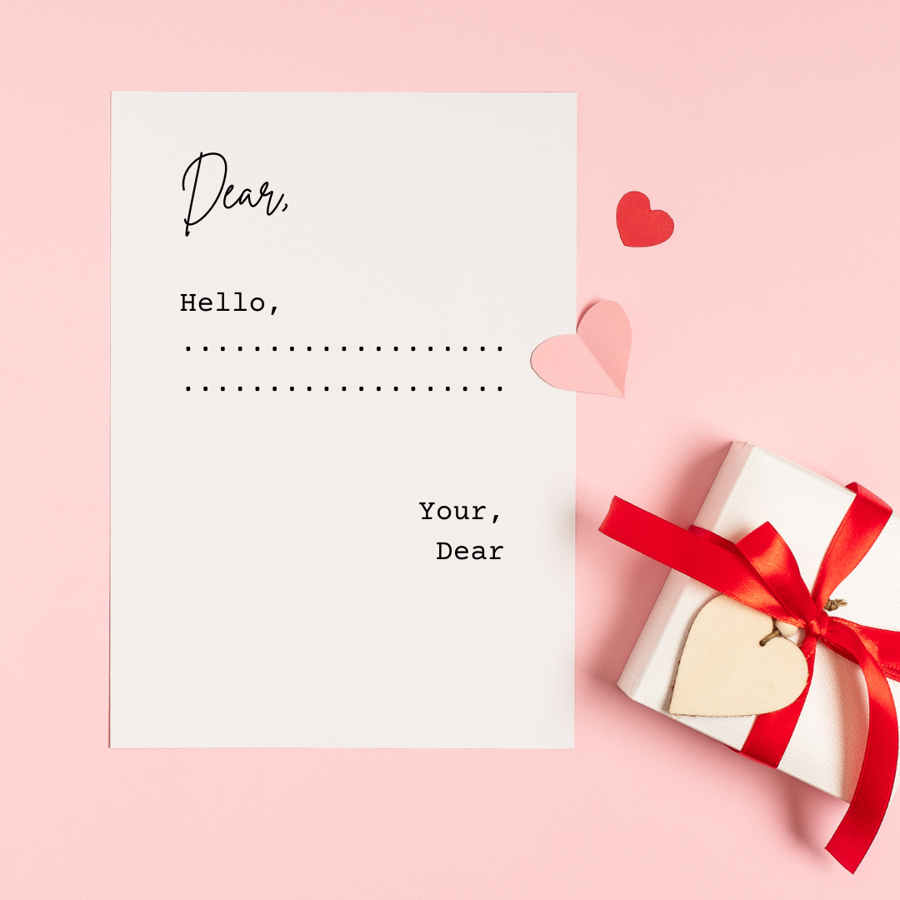

Swipe the mail icon to the right to open the letter
On this Letter Day, I felt it would be the perfect chance to pause for a while and send you a few words straight from the heart. In our fast-moving lives, we often forget how powerful a simple letter can be. It carries more than words—it carries care, warmth, and a reminder that someone is thinking of you. Today, I want you to feel that. I want to tell you how grateful I am to have you in my life. Friendship, in its truest sense, is not just about sharing happy moments but also about standing beside one another through difficult times. You’ve been that kind of friend to me—the one who makes ordinary days brighter, who makes laughter easier, and who makes life feel a little lighter. Sometimes, it’s not about grand gestures, but about the quiet comfort of knowing there’s someone who understands you without many words. That’s what you mean to me—a steady presence and a reminder of kindness in a world that often feels rushed. I hope that as you read this, you feel the sincerity behind each line. I hope you smile, even if just for a moment, knowing you are valued and appreciated. If this letter can make your day even a little better, then my purpose is fulfilled. So here’s to our friendship—to the memories we’ve made and the many more that lie ahead. I look forward to all the days we’ll share, the conversations yet to come, and the laughter that will echo between us. 💝
Cordially,
Your .......
@riad
Click and hold the mail icon, then swipe to the right to open the letter